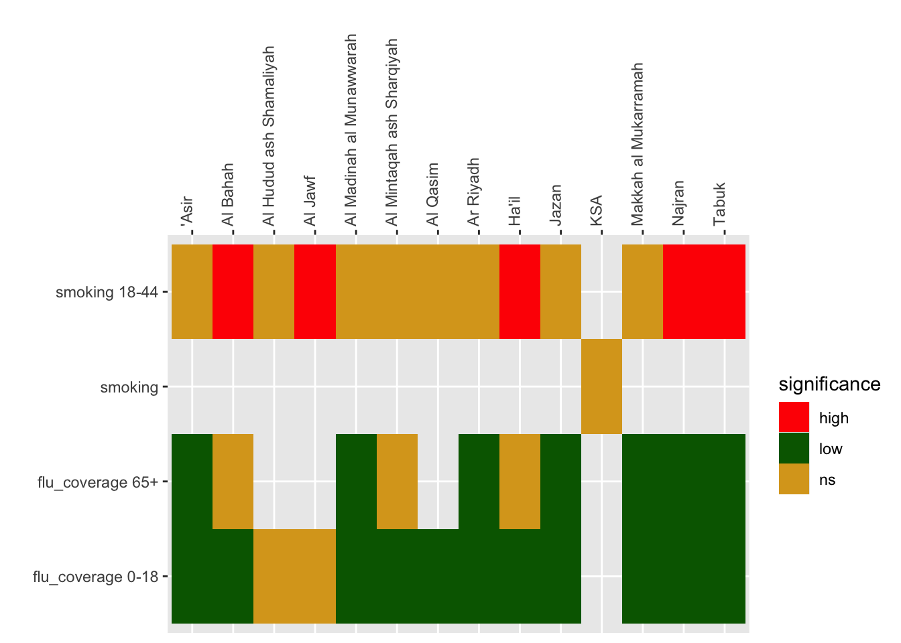

Code
## install fingertipscharts
##
if(!require("fingertipscharts")) devtools::install_github("https://github.com/ukhsa-collaboration/fingertipscharts", force = TRUE)
library(fingertipscharts)Health profiles combine multiple indicators to allow comparison, usually between population or administrative units e.g. regions, hospitals, ethnic groups, age groups and provide tools to facilitate a range of comparison.
UK health profiles (for example, Public Health Outcome Framework) offer a wide range of comparison:
Between and within areas
Between age groups and genders
| Comparison | Visualisation | Comment |
|---|---|---|
| Single area, multiple indicators | Spine or bullet chart | Indicator values are scaled so that they can be directly compared. Single area (unit) values are usually encoded as a dot or line, plotted on a bar representing the range of values for all areas / units. |
| Multiple areas, single indicator | Column / bar chart | Plots can be ordered and plotted horizontally to enable rapid appraisal of relative performance. Confidence intervals can be added |
| Indicator pairs / multiple indicators | Scatter plot or scatter plot matrices | May include smooths (lines representing fit to the data - common options are linear, loess and generalised additive models) |
| Spatial variation | Choropleth maps | Requires boundary files and GIS tools |
| Overview | Heatmap / tile chart | Colour cells with statistical significance categories (e.g. high / low) |
We will take the toolkit for plotting provided by the UKHSA which generates the charts used in the online version if the PHOF as a basis for plotting profiles. This is available at https://github.com/ukhsa-collaboration/fingertipscharts.
Note: in the PHOF statistical significance is defined by whether the global average value (e.g. KSA) is contained with the confidence limits of the unit values (e.g. ’Asir region). It does not calculate limits for the global value. The rationale for this is explained in Public Health Data Science (2018)
## install fingertipscharts
##
if(!require("fingertipscharts")) devtools::install_github("https://github.com/ukhsa-collaboration/fingertipscharts", force = TRUE)
library(fingertipscharts)To use fingertipscharts data has to be in the right format.
Bar charts can be created using the compare_areas function
smok_rates |>
compare_areas(area = region, value = value, lowerci = lowercl, upperci = uppercl, title = "Rate of attendance at smoking clinics 18-44: F")
flu_coverage |>
filter(gender == "female" & age == "0-18") |>
compare_areas(area = region, value = value, lowerci = lowercl, upperci = uppercl, fill = gender, title = "Flu vaccination coverage 0-18; F")PHOF uses a heatmap (known as a “tartan rug” to display area by indicator summaries. The term tartan rug is used to refer to the colour scheme (red-amber-green) to denote statistical significance. The
prof_data <- bind_rows(smok_rates, flu_coverage) |>
select(-c(11:13))
## calculate ksa values
ksa_values <- prof_data |>
group_by(indicator) |>
reframe(ksa_values = 100000 * sum(n, na.rm = TRUE) / sum(pop))
## join to data
prof_data <- prof_data |>
left_join(ksa_values)
## code for statistical significance
prof_data <- prof_data |>
mutate(significance = case_when(lowercl > ksa_values ~"high" ,
uppercl < ksa_values~ "low",
TRUE ~ "ns"))
head(prof_data) |>
gt::gt()| indicator | region | age | gender | n | pop | value | lowercl | uppercl | timeperiod | ksa_values | significance |
|---|---|---|---|---|---|---|---|---|---|---|---|
| smoking 18-44 | 'Asir | 18-44 | female | NA | 366324 | NA | NA | NA | 2023 | 7.618658 | ns |
| smoking 18-44 | Al Bahah | 18-44 | female | 28 | 61969 | 45.183882 | 30.017729 | 65.30573 | 2023 | 7.618658 | high |
| smoking 18-44 | Al Hudud ash Shamaliyah | 18-44 | female | 4 | 70149 | 5.702148 | 1.553643 | 14.59976 | 2023 | 7.618658 | ns |
| smoking 18-44 | Al Jawf | 18-44 | female | 23 | 103536 | 22.214495 | 14.077587 | 33.33412 | 2023 | 7.618658 | high |
| smoking 18-44 | Al Madinah al Munawwarah | 18-44 | female | NA | 387944 | NA | NA | NA | 2023 | 7.618658 | ns |
| smoking 18-44 | Al Mintaqah ash Sharqiyah | 18-44 | female | NA | 877403 | NA | NA | NA | 2023 | 7.618658 | ns |
prof_data |>
ggplot() +
geom_tile(aes(region, indicator, fill = significance)) +
scale_fill_manual(values = c("red", "darkgreen", "goldenrod")) +
scale_x_discrete(position = "top") +
theme(axis.text.x = element_text(angle = 90, hjust = 0)) +
labs(y = "", x = "")